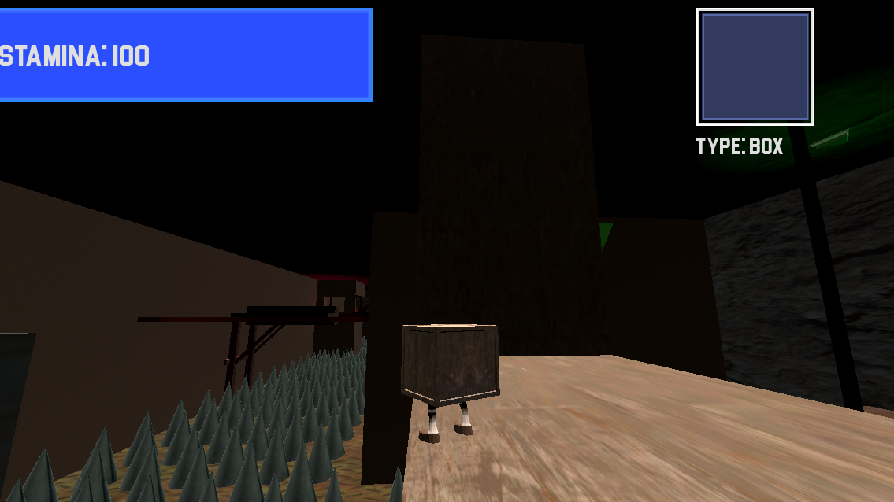

Box Bandicut

Box Bandicut é um jogo plataforma 3D, onde você controla um personagem que pode se transformar
em varias formas geoméricas para superar os desafios. Cada forma tem uma habilidade única.
O jogo foi totalmente desenvolvido na Godot Engine utilizando GDScript e
Programação Baseada em Componentes. Além do uso do Blender para a criação dos modelos e animações em 3D.
Nesse projeto, atuei como programador e gestor do projeto.